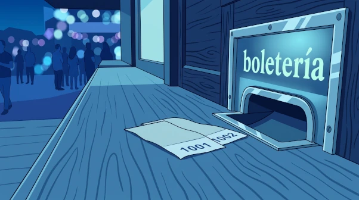
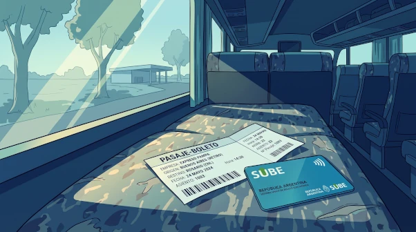
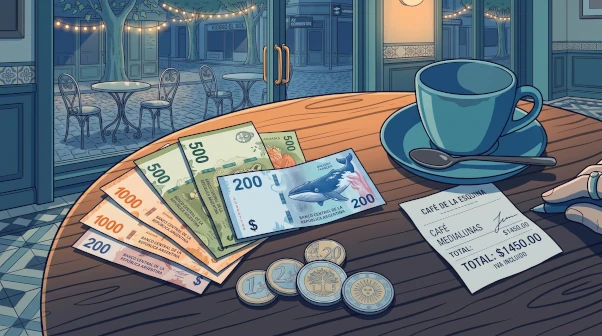

Entradas y pasajes · cómo hablar de mi nivel de español · la economía del lenguaje · preguntar en el parque · llegar a ser.
Velocidad 🔊
①
Entradas, pasajes y billetes
Tickets, fares and banknotes
Tres palabras para tres cosas distintas. La entrada sirve en todas partes: es el papel que me deja pasar a un espectáculo o a un lugar. El pasaje y el boleto son de transporte, y ahí sí cambia la región. Y el billete es la trampa: en España también significa pasaje, pero en la Argentina es solo dinero en papel.

la entradacine, teatro, museo, Ecoparque

el pasaje · el boletoavión, micro, colectivo, subte

el billetedinero en papel (y la moneda, en metal)
Para…
España
Argentina
un espectáculo (cine, teatro, museo)
la entrada
la entrada
avión o larga distancia
el billete
el pasaje
colectivo, subte, tren urbano
el billete
el boleto
dinero en papel
el billete
el billete
NOTA*
The split is transport-only. Entrada is not a regional variant — Spain says entrada for the cinema exactly like Argentina does, so there's nothing to unlearn there.
The word that actually collides is billete. In Spain it covers both the travel ticket and the banknote; in Argentina it only ever means the banknote. Asking for un billete a Córdoba in Buenos Aires is the single clearest tell that you learned your Spanish in Spain.
Dónde se compran
¿Dónde está la boletería?
Lat. Am. Where's the ticket office?
¿Dónde está la taquilla?
España Same question, Spanish word.
Ya saqué las entradas por internet.
I already got the tickets online. — sacar is the everyday verb here, not comprar.
Tengo que sacar un pasaje a Bariloche.
I need to book a ticket to Bariloche.
Lo que pago: factura, recibo, boleta, cuenta
Palabra
Qué es
la factura
El documento que me cobran, con el detalle de lo comprado.
el recibo
El comprobante de que ya pagué. Va después, no antes.
la boleta
En la Argentina, la de un servicio: la boleta de luz, de gas, de agua.
la cuenta
La del restaurante: La cuenta, por favor.
Todavía no llegó la boleta de la luz.
The electricity bill hasn't come yet.
Compramos una docena de facturas para el desayuno.
We bought a dozen pastries for breakfast.
NOTA*The factura pun. In Argentina las facturas are also the pastries from the panadería — medialunas (de manteca or de grasa), vigilantes, bolas de fraile, cañoncitos, libritos. You buy them by the docena or media docena. Churros are a familiar reference point from Spain but they're generally their own category, sold at a churrería rather than counted among the facturas. So pagar una factura and comer una factura are two completely different afternoons.
→Página completa: «Entradas, pasajes y facturas» en Vocabulario → Sustantivos — con la variación regional completa, los verbos y los dobles sentidos. (Por construir.)
②
Hablar de mi nivel de español
Telling a native you're still learning
El objetivo real de estas frases no es disculparse: es conseguir que el otro siga hablándome en español. Por eso conviene decir poco, decirlo bien y terminar con un pedido concreto.
✕
Mi español es malo. / Mi español no es bueno.
Traducción literal de «my Spanish is bad». Se entiende, pero nadie lo dice.
✓
Hablo poco español. / No hablo muy bien español.
El español describe la actividad, no la cosa.
NOTA*
English nominalizes; Spanish verbalizes. "My Spanish is bad" turns the language into an object you possess and then rates that object. Spanish goes at the same idea through the verb: you don't have bad Spanish, you speak a little, or you don't speak it well. The fix is almost mechanical — find the noun-plus-adjective and rewrite it as a verb plus an adverb.
This generalizes well beyond this sentence. Mi memoria es mala → me olvido de todo. Mi cocina es terrible → cocino muy mal. When a sentence feels like it came out of English intact, the noun is usually where it went wrong.
La escalera, de menos a más
Hablo un poco de español.
I speak a little Spanish. — positive framing: I have some.
Hablo poco español.
I don't speak much Spanish. — modest framing: I don't have much. Drop the de and the meaning tilts.
No hablo muy bien español.
I don't speak Spanish very well. — the safest all-purpose line.
Hablo muy mal español.
I speak Spanish very badly. — blunt, self-deprecating; fine among friends.
Estoy estudiando español.
I'm studying Spanish. — reframes it as work in progress instead of a deficit.
La frase completa — la que sirve en el momento
¿Puede hablarme en español, por favor? Estoy estudiando hace un año y medio.
Neutro Could you speak to me in Spanish, please? I've been studying for a year and a half.
¿Podés hablarme en español, por favor? Estoy estudiando hace un año y medio.
Rioplatense Her actual words. Voseo: podés, not puedes.
NOTA*
Estudiar, not aprender. Both are grammatical, but they frame you differently. Her example: her seven-year-old niece would say estoy aprendiendo español — because a child absorbs the language she's living in. An adult who has deliberately taken a language up as a subject says estudio español, the same verb as estudio medicina.
Aprender presents you as acquiring; estudiar presents you as doing the work. Since the whole point of the sentence is to be taken seriously enough that the other person keeps speaking Spanish to you, estudiar is the one that earns it.
NOTA*Estoy estudiando hace un año y medio — in Río de la Plata usage, bare hace covers duration up to now with no desde: vivo acá hace tres años. The fuller neutral form is desde hace un año y medio. Both are correct; hers is what you'll hear in Buenos Aires.
En español conviene decir lo mínimo. Si quiero saber si los carpinchos muerden, la pregunta entera es ¿muerden?. Agregarle poder no la hace más cortés: la convierte en otra pregunta.
✕
¿Pueden morder los carpinchos?
«Are they capable of biting?» — una pregunta de zoología.
✓
¿Muerden?
Lo que realmente quiero saber.
Poder tiene su lugar, y es un lugar preciso: permiso y capacidad. Cuando pregunto si algo está permitido, poder es exactamente el verbo correcto.
¿Se puede sacar fotos?
Are photos allowed? — permiso: correct use of poder.
¿Se puede darles de comer?
Can we feed them? — also permiso.
La salida de emergencia: colgar el infinitivo
Cuando la conjugación no sale en el momento, hay un truco: usar un verbo que sí tengo automático y colgarle el infinitivo que sí conozco. Soler es el que ella ofreció, pero la familia es más grande.
soler · poder · ir a · tener que · querer · acabar de + INFINITIVO
¿Suelen morder?
Do they usually bite? — correct, understood, and slightly off-target: it asks about habit.
Suelo venir los domingos.
I usually come on Sundays. — soler on its own merits, not as a workaround.
NOTA*
The escape hatch works — but know what it costs. Each auxiliary drags its own meaning along. ¿Suelen morder? asks about habit, ¿Pueden morder? about capacity. Both land, neither is the question. It beats freezing, and it beats blurting a bare infinitive — but it's a bridge, not a destination.
And the deeper fix: the verbs you reached for are built the same way as the verb you couldn't retrieve. Poder, soler and morder are all o → ue stem-changers, and they move in lockstep:
puedo · suelo · muerdo
pueden · suelen · muerden
You already conjugate that pattern without thinking — morder just wasn't filed under it. Store muerden next to pueden and the whole family gets cheaper: doler, volver, contar, costar, recordar, dormir, encontrar. Same machinery, one storage slot.
NOTA*
In Argentina the animal is un carpincho, not un capibara. Capibara is the technical/pan-Hispanic term; nobody at the Ecoparque will use it.
④
Preguntar en el parque
Role-play — the Ecoparque
Las preguntas que realmente sirven en la entrada de un parque. Cortas, directas, sin armar la oración entera antes de abrir la boca.
¿A qué hora abren? ¿Y a qué hora cierran?
What time do you open? And close?
¿Cuánto cuesta la entrada?
How much is admission?
¿Dónde están los carpinchos?
Where are the capybaras?
¿Cuál es la mejor hora para verlos?
What's the best time to see them?
¿Cuánto tarda el recorrido?
How long does the circuit take?
¿Hay descuento para jubilados?
Is there a discount for seniors?
¿Por dónde se entra?
Which way is the entrance?
Resumen de los interrogativos
Palabra
¿Flexiona?
Nota
qué
No
Va directo con sustantivo: ¿qué hora?, ¿qué animal?
cuál / cuáles
Número
Elige dentro de un conjunto. Normalmente sin sustantivo detrás.
quién / quiénes
Número
Solo personas.
cuánto / cuánta / cuántos / cuántas
Género y número
Concuerda: ¿cuántas entradas?, ¿cuánto tiempo?
cómo · cuándo · dónde · por qué
No
Invariables. Adónde agrega movimiento.
NOTA*
Cuál vs qué with ser. This is the one that trips English speakers, because English uses "what" for both. The split isn't about the noun — it's about what you're asking for:
¿Cuál es tu nombre? — pick one out of the set of possible names. Not¿qué es tu nombre?
¿Cuál es el problema? · ¿Cuál es la mejor hora? — same: select from a range.
¿Qué es un carpincho? — asking for a definition. Here qué is right and cuál would be wrong.
Rule of thumb: qué + ser asks what kind of thing is this; cuál + ser asks which one. Note this reverses in front of a noun, where qué takes over: ¿qué hora es?, never ¿cuál hora es?
Uno de los verbos de cambio, y el que menos me sale. Llegar a ser marca una culminación: el punto final de un trayecto que llevó tiempo y esfuerzo. No es simplemente «volverse» algo; es llegar a serlo.
Llegó a ser director del hospital.
He rose to become hospital director. — endpoint of a long climb.
Con el tiempo llegamos a ser muy amigos.
Over time we became close friends.
Nunca llegó a ser famoso fuera del país.
He never made it to famous outside the country. — the negative is very common: a trajectory that fell short.
NOTA*
Where it sits among the change verbs. Spanish splits "become" across half a dozen verbs, and each one encodes how the change happened:
ponerse — a passing state, usually physical or emotional: se puso rojo.
volverse — a lasting change that happened to you: se volvió desconfiado.
hacerse — gradual, and usually chosen: se hizo médico.
quedarse — the state you're left in after something: se quedó sordo.
convertirse en — a full transformation into another category: se convirtió en un símbolo.
llegar a ser — the summit of a climb: llegó a ser jefe de servicio.
The pair worth holding onto is hacerse vs llegar a ser. Se hizo médico reports the change — he trained, now he's a doctor. Llegó a ser jefe de servicio reports the arrival — there was a distance to cover, and he covered it.
→Página completa: «Verbos de cambio» en Gramática → Estructuras y patrones. (Por construir.)
Preguntas para la profe
Lo que quedó sin resolver — para la próxima clase
¿Pasaje se usa también para el tren de larga distancia, o ahí también se dice boleto? ¿Dónde está exactamente la frontera entre los dos?
En Buenos Aires, ¿se dice más la boleta de luz o la factura de luz? ¿Son intercambiables o hay una diferencia de registro?
Con la SUBE, ¿todavía se dice sacar un boleto, o ya se usa otra expresión para pagar el colectivo?